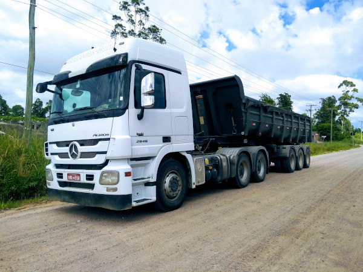

Minhas redes sociais
Quem sou eu?

Meu nome é
Alfinete
, sou apaixonado por ônibus e caminhões desde meus 11 anos de idade
Como falar comigo?
/tavernadoskeever
- Se inscreve lá no meu canal no YouTube